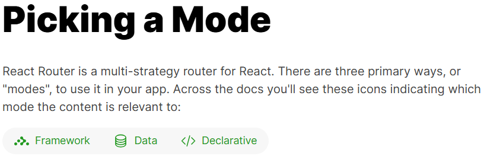

:userIdnpm i react-router (пакет react-router-dom в v7 больше не нужен)
| Режим | Как подключается | Что даёт |
|---|---|---|
| Declarative | <BrowserRouter> + <Routes> | только маршруты |
| Data | createBrowserRouter + RouterProvider | + loader / action, errorElement |
| Framework | Vite-плагин, npx create-react-router | + SSR, маршруты из файлов (бывший Remix) |
В курсе используем data mode; к framework mode вернёмся в теме 13.
10_router/6/src
src/
├── pages/
│ ├── Home.tsx
│ ├── About.tsx
│ ├── Login.tsx Register.tsx
│ ├── UserProfile.tsx
│ └── UserEdit.tsx // защищена ProtectedRoute
├── components/
│ ├── Button/ Card/ Header/
│ └── ProtectedRoute.tsx
├── contexts/AuthContext/
├── hooks/useForm.ts // + useForm.test.ts
├── router.tsx // routes + createBrowserRouter(routes)
├── App.tsx // layout: Header + <Outlet/>
└── main.tsx // AuthProvider + <RouterProvider router={router}/>
Код примеров к лекции — в папке 10_router/1…6 (каждая следующая папка развивает предыдущую).
10_router/2/src/router.tsx
import { createBrowserRouter, Navigate, type RouteObject } from 'react-router'
import App from './App'
import About from './pages/About'
import ErrorPage from './pages/ErrorPage'
import Home from './pages/Home'
import Login from './pages/Login'
// routes экспортируются отдельно, чтобы в тестах собрать createMemoryRouter
export const routes: RouteObject[] = [
{
path: '/',
element: <App />, // layout для всех дочерних страниц
errorElement: <ErrorPage />,
children: [
{ index: true, element: <Home /> },
{ path: 'about', element: <About /> },
{ path: 'login', element: <Login /> },
{ path: '*', element: <Navigate to="/" replace /> },
],
},
]
export const router = createBrowserRouter(routes)
10_router/2/src/main.tsx
createRoot(root!).render(
<StrictMode>
<RouterProvider router={router} />
</StrictMode>,
)
10_router/4/src/App.tsx
// App — layout с <Outlet/>: общая рамка для вложенных страниц
function App() {
return (
<div className="app">
<Header />
<nav className="app-nav">
<NavLink to="/" end>Главная</NavLink> {/* end: только точное совпадение */}
<NavLink to="/about">О нас</NavLink>
<NavLink to="/login">Login</NavLink>
</nav>
<main>
<Card>
<Outlet /> {/* сюда подставляется дочерний маршрут */}
</Card>
</main>
</div>
)
}
<Link to="/about">; <NavLink> ещё и добавляет класс active. Ссылку не кладём внутрь <button> — это невалидный HTMLerrorElement + хук useRouteError()path: '*'10_router/3/src/pages/UserProfile.tsx
// router.tsx: { path: 'user/:userId', element: <UserProfile /> }
const UserProfile: React.FC = () => {
const { userId } = useParams<UserProfileParams>() // из URL
const navigate = useNavigate()
const location = useLocation()
const handleGoBack = () => navigate(-1)
const handleEdit = () =>
navigate(`/user/${userId}/edit`, {
state: { from: location.pathname }
})
return (
<div>
<h1>Профиль пользователя {userId}</h1>
<p>Текущий путь: {location.pathname}</p>
<Button onClick={handleGoBack}>Назад</Button>
<Button onClick={handleEdit}>Редактировать</Button>
</div>
)
}
10_router/4/src/contexts/AuthContext/AuthContext.ts
export interface User {
id: string;
name: string;
email: string;
}
export interface AuthContextType {
user: User | null;
login: (email: string, password: string) => Promise<void>;
logout: () => void;
isAuthenticated: boolean;
}
export const AuthContext =
createContext<AuthContextType | undefined>(undefined)
export const useAuth = () => {
const context = useContext(AuthContext)
if (context === undefined) {
throw new Error('useAuth must be used within an AuthProvider')
}
return context
}
Когда использовать: тема, аутентификация, язык, настройки. Когда нет: часто меняющиеся данные.
10_router/4/src/contexts/AuthContext/AuthProvider.tsx
export const AuthProvider: React.FC<{ children: ReactNode }> =
({ children }) => {
const [user, setUser] = useState<User | null>(null)
const login = async (email: string, password: string): Promise<void> => {
await new Promise(resolve => setTimeout(resolve, 1000)) // имитация API
if (password.length < 6) throw new Error('Неверный email или пароль')
setUser({ id: '1', name: 'Анна Петрова', email })
}
const logout = () => setUser(null)
const value: AuthContextType = {
user, login, logout,
isAuthenticated: !!user
}
return (
<AuthContext.Provider value={value}> {/* React 19: <AuthContext value={value}> */}
{children}
</AuthContext.Provider>
)
}
// main.tsx — провайдер оборачивает весь роутер
<AuthProvider>
<RouterProvider router={router} />
</AuthProvider>
⚠️ Объект value и функции создаются заново на каждом рендере, поэтому все компоненты с useAuth() тоже перерисовываются. Как это исправить через useMemo/useCallback — в теме 12.
10_router/6/src/components/ProtectedRoute.tsx
// components/ProtectedRoute.tsx
import { Navigate, Outlet, useLocation } from 'react-router'
import { useAuth } from '../contexts/AuthContext/AuthContext'
export function ProtectedRoute() {
const { isAuthenticated } = useAuth()
const location = useLocation()
if (!isAuthenticated) {
// запоминаем, куда шёл пользователь
return <Navigate to="/login" replace state={{ from: location }} />
}
return <Outlet />
}
// router.tsx — закрытые страницы оборачиваем маршрутом без path
children: [
{ path: 'user/:userId', element: <UserProfile /> }, // открыта всем
{
element: <ProtectedRoute />,
children: [{ path: 'user/:userId/edit', element: <UserEdit /> }],
},
]
// LoginForm — после входа возвращаем туда, откуда пришли
const from = (location.state as { from?: Location } | null)?.from?.pathname ?? '/'
await login(formData.email, formData.password)
navigate(from, { replace: true })
Тест сценария — в 10_router/6/src/App.test.tsx: createMemoryRouter открывает /user/42/edit, проверяем редирект на /login и возврат после входа.
10_router/6/src/hooks/useForm.ts (сокращено)
export interface ValidationRule<T> {
required?: boolean
minLength?: number
pattern?: RegExp
custom?: (value: string, values: T) => string | undefined // values — вся форма
}
export function useForm<T extends Record<string, string>>({
initialValues, validationRules = {}, onSubmit,
}: UseFormOptions<T>) {
const [values, setValues] = useState<T>(initialValues)
const [errors, setErrors] = useState<FormErrors<T>>({})
const [touched, setTouched] = useState<Partial<Record<keyof T, boolean>>>({})
const [isSubmitting, setIsSubmitting] = useState(false)
const validate = (formValues: T, fields: (keyof T)[]) => {
const result: FormErrors<T> = {}
for (const name of fields) {
const error = validateField(formValues[name], formValues, validationRules[name])
if (error) result[name] = error
}
return result
}
const handleChange = (name: keyof T, value: string) => {
const nextValues = { ...values, [name]: value } as T
const nextTouched = { ...touched, [name]: true }
setValues(nextValues)
setTouched(nextTouched)
// перепроверяем все тронутые поля: смена password обновит ошибку confirmPassword
setErrors(validate(nextValues, Object.keys(nextTouched) as (keyof T)[]))
}
const handleSubmit = async (e: FormEvent) => {
e.preventDefault()
const allErrors = validate(values, Object.keys(values) as (keyof T)[])
setErrors(allErrors)
if (Object.keys(allErrors).length > 0) return
setIsSubmitting(true)
try { await onSubmit(values) } finally { setIsSubmitting(false) }
}
return { values, errors, isSubmitting, handleChange, handleSubmit }
}
// RegistrationForm: сравнение двух полей через custom
confirmPassword: {
required: true,
custom: (value, formValues) => (value !== formValues.password ? 'Пароли не совпадают' : undefined),
},
Дженерик T — тип значений формы: handleChange('emial', …) с опечаткой не скомпилируется. Тесты хука — в useForm.test.ts.
/имя-репо/: нужен base в Vite и basename у роутера/имя-репо/about даёт 404: на сервере такого файла нет, маршрут существует только в JSGitHub Pages
// vite.config.ts
export default defineConfig({ base: '/имя-репо/', plugins: [react()] })
// router.tsx
createBrowserRouter(routes, { basename: import.meta.env.BASE_URL })
// package.json — копия index.html под именем 404.html
"postbuild": "node -e \"require('fs').copyFileSync('dist/index.html','dist/404.html')\""
Другие варианты: createHashRouter (адреса вида /#/about) или rewrite на index.html в Netlify/Vercel.